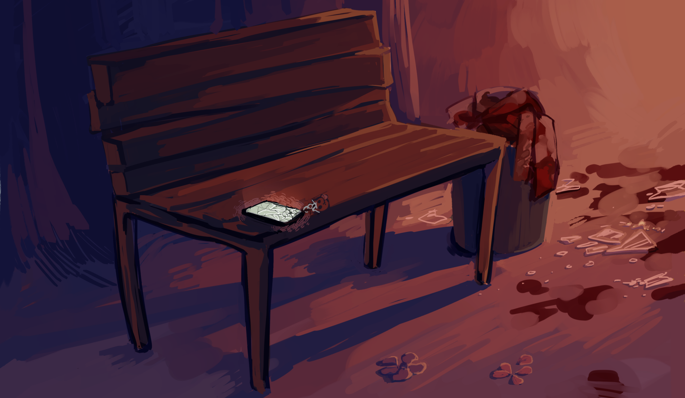

Новые сообщения
сегодня

Иногда банально страшно
На самом деле, я не знаю с чего мне начать, последнее сообщение так и висит непрочитанным. Кто я такой, чтобы заставлять тебя мне отвечать.
Я хотел рассказать... что-то. Не знаю. Может быть, ты откроешь. Сегодня я ходил в парк. Видел гусей. Знаешь, такие белые, они ещё дерутся друг с другом в воде. Или это были серые. Имеет ли это смысл.
Я видел новости. Твой онлайн беспокоит. Не то, чтобы у тебя было желание мне ответить в любом случае. Мне не про уток нужно говорить, знаешь, про чувства, как ты обычно советуешь. Жаль, не умею я так.
Может, я параноик. На всякий случай - я хотел написать тебе песню однажды, не вышло. Тяжело беру аккорды. Небось не осилила бы мои картавые струны. Да и слава богу, на самом деле.
Я всегда неможко боялся, что ты мне больше никогда не ответишь, поэтому сейчас меня немного трясёт.
Если у тебя есть время и силы - пожалуйста отпишись. Да хуй с ним, просто блокни. Хоть что-нибудь сделай.
Мне страшно.